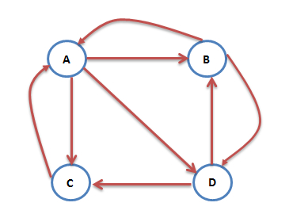
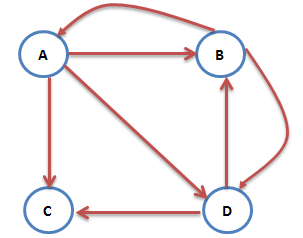
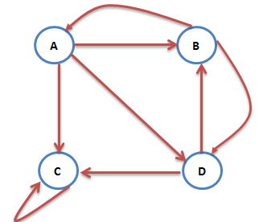
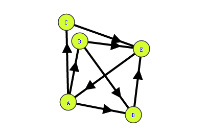
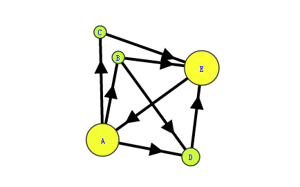

PageRank原理
1. 算法来源
这个要从搜索引擎的发展讲起。最早的搜索引擎采用的是 分类目录ref_1 的方法，即通过人工进行网页分类并整理出高质量的网站。那时 Yahoo 和国内的 hao123 就是使用的这种方法。
后来网页越来越多，人工分类已经不现实了。搜索引擎进入了 文本检索 的时代，即计算用户查询关键词与网页内容的相关程度来返回搜索结果。这种方法突破了数量的限制，但是搜索结果不是很好。因为总有某些网页来回地倒腾某些关键词使自己的搜索排名靠前。
于是我们的主角要登场了。没错，谷歌的两位创始人，当时还是美国斯坦福大学 (Stanford University) 研究生的佩奇 (Larry Page) 和布林 (Sergey Brin) 开始了对网页排序问题的研究。他们的借鉴了学术界评判学术论文重要性的通用方法， 那就是看论文的引用次数。由此想到网页的重要性也可以根据这种方法来评价。于是PageRank的核心思想就诞生了ref_2，非常简单：
如果一个网页被很多其他网页链接到的话说明这个网页比较重要，也就是PageRank值会相对较高
如果一个PageRank值很高的网页链接到一个其他的网页，那么被链接到的网页的PageRank值会相应地因此而提高
就如下图所示（一个概念图）:
2. 算法原理
PageRank算法ref_3总的来说就是预先给每个网页一个PR值（下面用PR值指代PageRank值），由于PR值物理意义上为一个网页被访问概率，所以一般是
，其中N为网页总数。另外，一般情况下，所有网页的PR值的总和为1。如果不为1的话也不是不行，最后算出来的不同网页之间PR值的大小关系仍然是正确的，只是不能直接地反映概率了。
预先给定PR值后，通过下面的算法不断迭代，直至达到平稳分布为止。
互联网中的众多网页可以看作一个有向图。下图是一个简单的例子ref_4：

这时A的PR值就可以表示为：
然而图中除了C之外，B和D都不止有一条出链，所以上面的计算式并不准确。想象一个用户现在在浏览B网页，那么下一步他打开A网页还是D网页在统计上应该是相同概率的。所以A的PR值应该表述为：
互联网中不乏一些没有出链的网页，如下图

图中的C网页没有出链，对其他网页没有PR值的贡献，我们不喜欢这种自私的网页（其实是为了满足 Markov 链的收敛性），于是设定其对所有的网页（包括它自己）都有出链，则此图中A的PR值可表示为：
然而我们再考虑一种情况：互联网中一个网页只有对自己的出链，或者几个网页的出链形成一个循环圈。那么在不断地迭代过程中，这一个或几个网页的PR值将只增不减，显然不合理。如下图中的C网页就是刚刚说的只有对自己的出链的网页：

为了解决这个问题。我们想象一个随机浏览网页的人，当他到达C网页后，显然不会傻傻地一直被C网页的小把戏困住。我们假定他有一个确定的概率会输入网址直接跳转到一个随机的网页，并且跳转到每个网页的概率是一样的。于是则此图中A的PR值可表示为：
在一般情况下，一个网页的PR值计算如下：
其中是所有对网页有出链的网页集合，是网页的出链数目，N是网页总数，α一般取0.85。
根据上面的公式，我们可以计算每个网页的PR值，在不断迭代趋于平稳的时候，即为最终结果。具体怎样算是趋于平稳，我们在下面的PR值计算方法部分再做解释。
3. 算法证明
是否存在？
如果极限存在，那么它是否与的选取无关？
PageRank算法的正确性证明包括上面两点ref_5。为了方便证明，我们先将PR值的计算方法转换一下。
仍然拿刚刚的例子来说

我们可以用一个矩阵来表示这张图的出链入链关系，表示网页没有对i网页的出链
取e为所有分量都为 1 的列向量,接着定义矩阵
则PR值的计算如下，其中为第n次迭代时各网页PR值组成的列向量:
于是计算PR值的过程就变成了一个 Markov 过程，那么PageRank算法的证明也就转为证明 Markov 过程的收敛性证明：如果这个 Markov 过程收敛，那么存在，且与的选取无关。
若一个 Markov 过程收敛，那么它的状态转移矩阵A需要满足：
A为随机矩阵。
A是不可约的。
A是非周期的。
先看第一点，随机矩阵又叫概率矩阵或 Markov 矩阵，满足以下条件 ：
显然我们的A矩阵所有元素都大于等于0，并且每一列的元素和都为1。
第二点，不可约矩阵：方针A是不可约的当且仅当与A对应的有向图是强联通的。有向图 是强联通的当且仅当对每一对节点对u,v∈V，存在从u到v
的路径。因为我们在之前设定用户在浏览页面的时候有确定概率通过输入网址的方式访问一个随机网页，所以A矩阵同样满足不可约的要求。
第三点，要求A是非周期的。所谓周期性，体现在Markov链的周期性上。即若A是周期性的，那么这个Markov链的状态就是周期性变化的。因为A是素矩阵（素矩阵指自身的某个次幂为正矩阵的矩阵），所以A是非周期的。
至此，我们证明了PageRank算法的正确性。
4. PR值计算方法
4.1 幂迭代法
首先给每个页面赋予随机的PR值，然后通过不断地迭代PR值。当满足下面的不等式后迭代结束，获得所有页面的PR值：
4.2 特征值法
当上面提到的Markov链收敛时，必有：
4.3 代数法
相似的，当上面提到的Markov链收敛时，必有：
5. 算法实现
5.1 基于迭代法的简单实现
用python实现，需要先安装python-graph-core。
# -*- coding: utf-8 -*-
from pygraph.classes.digraph import digraph
class PRIterator:
__doc__ = '''计算一张图中的PR值'''
def __init__(self, dg):
self.damping_factor = 0.85 # 阻尼系数,即α
self.max_iterations = 100 # 最大迭代次数
self.min_delta = 0.00001 # 确定迭代是否结束的参数,即ϵ
self.graph = dg
def page_rank(self):
# 先将图中没有出链的节点改为对所有节点都有出链
for node in self.graph.nodes():
if len(self.graph.neighbors(node)) == 0:
for node2 in self.graph.nodes():
digraph.add_edge(self.graph, (node, node2))
nodes = self.graph.nodes()
graph_size = len(nodes)
if graph_size == 0:
return {}
page_rank = dict.fromkeys(nodes, 1.0 / graph_size) # 给每个节点赋予初始的PR值
damping_value = (1.0 - self.damping_factor) / graph_size # 公式中的(1−α)/N部分
flag = False
for i in range(self.max_iterations):
change = 0
for node in nodes:
rank = 0
for incident_page in self.graph.incidents(node): # 遍历所有“入射”的页面
rank += self.damping_factor * (page_rank[incident_page] / len(self.graph.neighbors(incident_page)))
rank += damping_value
change += abs(page_rank[node] - rank) # 绝对值
page_rank[node] = rank
print("This is NO.%s iteration" % (i + 1))
print(page_rank)
if change < self.min_delta:
flag = True
break
if flag:
print("finished in %s iterations!" % node)
else:
print("finished out of 100 iterations!")
return page_rank
if __name__ == '__main__':
dg = digraph()
dg.add_nodes(["A", "B", "C", "D", "E"])
dg.add_edge(("A", "B"))
dg.add_edge(("A", "C"))
dg.add_edge(("A", "D"))
dg.add_edge(("B", "D"))
dg.add_edge(("C", "E"))
dg.add_edge(("D", "E"))
dg.add_edge(("B", "E"))
dg.add_edge(("E", "A"))
pr = PRIterator(dg)
page_ranks = pr.page_rank()
print("The final page rank is\n", page_ranks)
运行结果：
finished in 36 iterations!
The final page rank is
{'A': 0.2963453309000821, 'C': 0.11396451042168992, 'B': 0.11396451042168992, 'E': 0.31334518664434013, 'D': 0.16239975107315852}
程序中给出的网页之间的关系一开始如下：

迭代结束后如下：

5.2 MapReduce实现
作为Hadoop（分布式系统平台）的核心模块之一，MapReduce是一个高效的分布式计算框架。下面首先简要介绍一下MapReduce原理。
所谓MapReduce，就是两种操作：Mapping和Reducing
映射（Mapping）：对集合里的每个目标应用同一个操作。
化简（Reducing ）：遍历Mapping返回的集合中的元素来返回一个综合的结果
就拿一个最经典的例子来说：现在有3个文本文件，需要统计出所有出现过的词的词频。传统的想法是让一个人顺序阅读这3个文件，每遇到一个单词，就看之前有没有遇到过。遇到过的话词频加一：（单词，N + 1），否则就记录新词，词频为一：（单词，1）。
MapReduce方式为：把这3个文件分给3个人，每个人阅读一份文件。每当遇到一个单词，就记录这个单词：（单词，1）（不管之前有没有遇到过这个单词，也就是说可能出现多个相同单词的记录）。之后将再派一个人把相同单词的记录相加，即可得到最终结果。
词频统计的具体实现可见点我。
下面是使用MapReduce实现PageRank的具体代码ref_9。首先是通用的map与reduce模块。若是感觉理解有困难，可以先看看词频统计的实现代码，其中同样使用了下面的模块：
class MapReduce:
__doc__ = '''提供map_reduce功能'''
@staticmethod
def map_reduce(i, mapper, reducer):
"""
map_reduce方法
:param i: 需要MapReduce的集合
:param mapper: 自定义mapper方法
:param reducer: 自定义reducer方法
:return: 以自定义reducer方法的返回值为元素的一个列表
"""
intermediate = [] # 存放所有的(intermediate_key, intermediate_value)
for (key, value) in i.items():
intermediate.extend(mapper(key, value))
# sorted返回一个排序好的list，因为list中的元素是一个个的tuple，key设定按照tuple中第几个元素排序
# groupby把迭代器中相邻的重复元素挑出来放在一起,key设定按照tuple中第几个元素为关键字来挑选重复元素
# 下面的循环中groupby返回的key是intermediate_key，而group是个list，是1个或多个
# 有着相同intermediate_key的(intermediate_key, intermediate_value)
groups = {}
for key, group in itertools.groupby(sorted(intermediate, key=lambda im: im[0]), key=lambda x: x[0]):
groups[key] = [y for x, y in group]
# groups是一个字典，其key为上面说到的intermediate_key，value为所有对应intermediate_key的intermediate_value
# 组成的一个列表
return [reducer(intermediate_key, groups[intermediate_key]) for intermediate_key in groups]
接着是计算PR值的类，其中实现了用于计算PR值的mapper和reducer：
class PRMapReduce:
__doc__ = '''计算PR值'''
def __init__(self, dg):
self.damping_factor = 0.85 # 阻尼系数,即α
self.max_iterations = 100 # 最大迭代次数
self.min_delta = 0.00001 # 确定迭代是否结束的参数,即ϵ
self.num_of_pages = len(dg.nodes()) # 总网页数
# graph表示整个网络图。是字典类型。
# graph[i][0] 存放第i网页的PR值
# graph[i][1] 存放第i网页的出链数量
# graph[i][2] 存放第i网页的出链网页，是一个列表
self.graph = {}
for node in dg.nodes():
self.graph[node] = [1.0 / self.num_of_pages, len(dg.neighbors(node)), dg.neighbors(node)]
def ip_mapper(self, input_key, input_value):
"""
看一个网页是否有出链，返回值中的 1 没有什么物理含义，只是为了在
map_reduce中的groups字典的key只有1，对应的value为所有的悬挂网页
的PR值
:param input_key: 网页名，如 A
:param input_value: self.graph[input_key]
:return: 如果没有出链，即悬挂网页，那么就返回[(1,这个网页的PR值)]；否则就返回[]
"""
if input_value[1] == 0:
return [(1, input_value[0])]
else:
return []
def ip_reducer(self, input_key, input_value_list):
"""
计算所有悬挂网页的PR值之和
:param input_key: 根据ip_mapper的返回值来看，这个input_key就是:1
:param input_value_list: 所有悬挂网页的PR值
:return: 所有悬挂网页的PR值之和
"""
return sum(input_value_list)
def pr_mapper(self, input_key, input_value):
"""
mapper方法
:param input_key: 网页名，如 A
:param input_value: self.graph[input_key]，即这个网页的相关信息
:return: [(网页名, 0.0), (出链网页1, 出链网页1分得的PR值), (出链网页2, 出链网页2分得的PR值)...]
"""
return [(input_key, 0.0)] + [(out_link, input_value[0] / input_value[1]) for out_link in input_value[2]]
def pr_reducer_inter(self, intermediate_key, intermediate_value_list, dp):
"""
reducer方法
:param intermediate_key: 网页名，如 A
:param intermediate_value_list: A所有分得的PR值的列表:[0.0,分得的PR值,分得的PR值...]
:param dp: 所有悬挂网页的PR值之和
:return: (网页名，计算所得的PR值)
"""
return (intermediate_key,
self.damping_factor * sum(intermediate_value_list) +
self.damping_factor * dp / self.num_of_pages +
(1.0 - self.damping_factor) / self.num_of_pages)
def page_rank(self):
"""
计算PR值，每次迭代都需要两次调用MapReduce。一次是计算悬挂网页PR值之和，一次
是计算所有网页的PR值
:return: self.graph，其中的PR值已经计算好
"""
iteration = 1 # 迭代次数
change = 1 # 记录每轮迭代后的PR值变化情况，初始值为1保证至少有一次迭代
while change > self.min_delta:
print("Iteration: " + str(iteration))
# 因为可能存在悬挂网页，所以才有下面这个dangling_list
# dangling_list存放的是[所有悬挂网页的PR值之和]
# dp表示所有悬挂网页的PR值之和
dangling_list = MapReduce.map_reduce(self.graph, self.ip_mapper, self.ip_reducer)
if dangling_list:
dp = dangling_list[0]
else:
dp = 0
# 因为MapReduce.map_reduce中要求的reducer只能有两个参数，而我们
# 需要传3个参数（多了一个所有悬挂网页的PR值之和,即dp），所以采用
# 下面的lambda表达式来达到目的
# new_pr为一个列表，元素为:(网页名，计算所得的PR值)
new_pr = MapReduce.map_reduce(self.graph, self.pr_mapper, lambda x, y: self.pr_reducer_inter(x, y, dp))
# 计算此轮PR值的变化情况
change = sum([abs(new_pr[i][1] - self.graph[new_pr[i][0]][0]) for i in range(self.num_of_pages)])
print("Change: " + str(change))
# 更新PR值
for i in range(self.num_of_pages):
self.graph[new_pr[i][0]][0] = new_pr[i][1]
iteration += 1
return self.graph
最后是测试部分，我使用了python的digraph创建了一个有向图，并调用上面的方法来计算PR值：
if __name__ == '__main__':
dg = digraph()
dg.add_nodes(["A", "B", "C", "D", "E"])
dg.add_edge(("A", "B"))
dg.add_edge(("A", "C"))
dg.add_edge(("A", "D"))
dg.add_edge(("B", "D"))
dg.add_edge(("C", "E"))
dg.add_edge(("D", "E"))
dg.add_edge(("B", "E"))
dg.add_edge(("E", "A"))
pr = PRMapReduce(dg)
page_ranks = pr.page_rank()
print("The final page rank is")
for key, value in page_ranks.items():
print(key + " : ", value[0])
附上运行结果：
Iteration: 44
Change: 1.275194338951069e-05
Iteration: 45
Change: 1.0046004543212694e-05
Iteration: 46
Change: 7.15337406470562e-06
The final page rank is
E : 0.3133376132128915
C : 0.11396289866948645
B : 0.11396289866948645
A : 0.2963400114149353
D : 0.1623965780332006
以上便是PageRank的MapReduce实现。代码中的注释较为详细，理解应该不难。
6. PageRank算法的缺点
这是一个天才的算法，原理简单但效果惊人。然而，PageRank算法还是有一些弊端。
第一，没有区分站内导航链接。很多网站的首页都有很多对站内其他页面的链接，称为站内导航链接。这些链接与不同网站之间的链接相比，肯定是后者更能体现PageRank值的传递关系。
第二，没有过滤广告链接和功能链接（例如常见的“分享到微博”）。这些链接通常没有什么实际价值，前者链接到广告页面，后者常常链接到某个社交网站首页。
第三，对新网页不友好。一个新网页的一般入链相对较少，即使它的内容的质量很高，要成为一个高PR值的页面仍需要很长时间的推广。
针对PageRank算法的缺点，有人提出了TrustRank算法。其最初来自于2004年斯坦福大学和雅虎的一项联合研究，用来检测垃圾网站。TrustRank算法的工作原理：先人工去识别高质量的页面(即“种子”页面)，那么由“种子”页面指向的页面也可能是高质量页面，即其TR值也高，与“种子”页面的链接越远，页面的TR值越低。“种子”页面可选出链数较多的网页，也可选PR值较高的网站。
TrustRank算法给出每个网页的TR值。将PR值与TR值结合起来，可以更准确地判断网页的重要性。